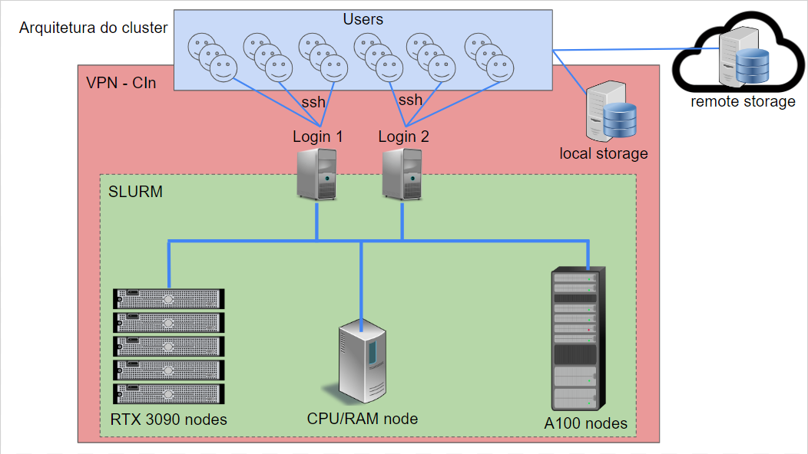
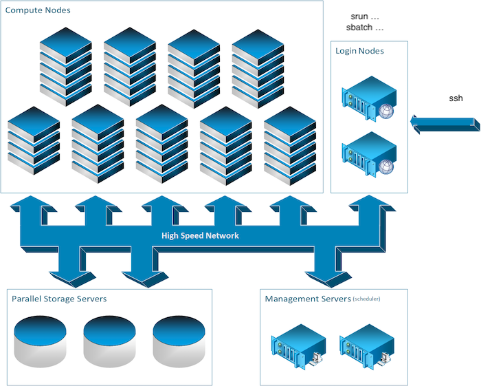

Arquitetura Cluster Apuana¶
Visão geral da arquitetura e acesso¶
Visão geral de funcionamento do cluster¶
- Login Nodes
slurm-client[1-2] slurm (srun, salloc, sbatch)
- Management
slurm-manager[1-2] slurmctld slurmdbdb
- Compute Nodes
cluster-node[1-5] slurmd
- Storage:
$SLURM_TMPDIR
- Parallel Storage
slurmdbdb database
Storage (baseado no MILA)
$HOME
$DATASETS
$SCRATCH
$PROJECTS
$ARCHIVE
Política de Alocação de Recursos¶
- Quota destinada aos pesquisadores (geralmente professores do CIn)
Pesquisadores definem quem está em seu grupo de pesquisa Todos em um grupo de pesquisa usam a quota do pesquisador
Quota destinada a cada pesquisador depende da quantidade de recursos que ele investiu no cluster
Uma quota mínima será fornecida a todos os professores do CIn e aos pesquisadores participantes do Projeto Hiper.
Política de Uso¶
- Fila de jobs:
Cada usuário submete um job ao SLURM Na submissão do job, o usuário especifica os recursos que precisa (GPUs, CPUs, RAM) Quanto mais recursos ele solicita menor prioridade Usuários com mais quota possuem maior prioridade
- Categorias de tempo execução:
Jobs de longa duração (ex.: 7 dias sem ser finalizado usando poucos recursos) Jobs de curta média (ex.: 1 dia) sem ser finalizado usando quantidade média de recursos Jobs de curta duração (ex.: 2 horas) sem sofrer preempção usando maior quantidade de recursos
- Preempção:
Após um certo tempo mínimo de execução um job pode sofrer preempção para dar espaço para outros jobs (em situações de sobrecarga) Ao sofrer preempção o job volta para a fila de espera e será retomado quando houver recursos para ele O usuário é responsável por implementar o salvamento e carregamento do estado do seu job (checkpointing)
Pontos Importantes Sobre a Segurança¶
Acesso externo indevido
- Privacidade de dados
Datasets públicos (preferencialmente compartilhados) Datasets privados (compartilhados entre os membros de um grupo de pesquisa)
- Uso indevido de recursos
Computação/armazenamento fora da cota de uso Mineração de criptomoedas (dentro ou fora da cota)